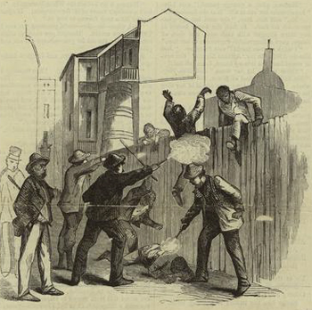

|
Because federal troops conquered Southern Louisiana early in the war, the
Reconstruction process there began sooner than in most other areas. Elections
for Congress, based on the comparatively large number of white Unionists, were
held in December 1862 in two New Orleans districts, where Michael Hahn and
|

The New Orleans riot left at least
50 black Civil War veterans dead.
|
Benjamin F. Flanders were returned to the House of Representatives and briefly
seated. But it was not until Abraham Lincoln published his Proclamation of
Amnesty that Reconstruction really got under way. Eager to abolish slavery and
to reestablish loyal government as quickly as possible, the President turned a
deaf ear to conservative Unionists who had elected their own congressmen and to
radicals anxious for delay. He entrusted the process to General Nathaniel P.
Banks who called for an election under the state's old constitution of 1852,
although he did not recognize its sanction of slavery. The result was the
election in February 1864 of Michael Hahn as Governor.
Elections for a constitutional convention followed. This body met, abolished
slavery, and wrote a constitution leaving the matter of black suffrage to the
discretion of the legislature. Because of the latter's failure to act upon the
subject, the congressional representatives elected under the new charter were
never seated.
The inauguration of Andrew Johnson boded ill for the Louisiana experiment.
Governor Hahn, who had been elected to the Senate, turned over his office to
Lieutenant Governor J. Madison Wells, a scalawag who sought to ally himself with
conservatives and former Confederates. Stringent Black Codes were passed, and,
with the President's blessing, the old ruling elite regained much of its power.
When this group finally tried to scrap the constitution of 1864, Wells,
realizing that his efforts at reconciliation had failed, countenanced the recall
of the constitutional convention. This attempt in July 1866 was frustrated by
the New Orleans riot, a merciless massacre of black and white Unionists.
The revulsion caused in the North by this atrocity contributed to the defeat
of the Democrats and Johnson's policies. After the passage of the Reconstruction
Acts, Louisiana was once again placed under military rule. In compliance with
the law, the state, with its large black population, elected a constitutional
convention that framed a new constitution conferring the suffrage upon the
blacks, disfranchising a number of former insurgents, and mandating integration.
In the subsequent elections, the carpetbagger Henry Clay Warmoth was chosen
Governor, the former slave Oscar J. Dunn became Lieutenant Governor, and the
legislature was safely Republican. It ratified the Fourteenth Amendment, and in
June 1868 Louisiana was readmitted.
Yet the opposition of the entrenched whites made it difficult for any radical
regime to function, and because of the incessant intimidation of the blacks, in

Henry Clay Warmoth
|
the presidential election of 1868 the state was carried by the Democrats. To
prevent similar tactics, the Republicans established a Returning Board with the
power to pass on disputed election returns, and in time, the Governor's control
of the election machinery and the passage of the Enforcement Acts strengthened
the Republicans' position. The charges of corruption brought against the radical
regimes were partially justified, although dishonesty neither started nor ended
with the Republicans. In 1870 they succeeded in recapturing the legislature;
however, Warmoth now faced opposition not only from the conservatives but also
from the Republican Custom House faction headed by U.S. marshal Stephen B.
Packard and favored by collector James F. Casey, President Grant's
brother-in-law.
Beset by continuing corruption, the Republican regime experienced further
trouble in 1872, when Warmoth, seeking to ally himself with the moderate
opposition, joined the Liberal Republicans. The Democrats and eventually the
Liberals nominated the former Confederate John McEnery for Governor, and the
regular Republicans put up the carpetbagger William Pitt Kellogg. The resulting
disputed election led to the emergence of two rival returning boards and
legislatures. When the Republican board sought relief from federal Judge Edward
H. Durell, he ordered the seizure of the statehouse and recognized the
Republican legislature, which then impeached Warmoth. Accusing him of having

Oscar J. Dunn
|
tried to bribe Lieutenant Governor P.B.S. Pinchback, it made the latter, a
well-educated mulatto, Governor for the short period before Kellogg's
inauguration.
Although in the long run the Kellogg government rather than its Democratic
rival was recognized by the federal government, the emergence of the terrorist
White League made the normal functioning of the Republican administration
impossible. Bloody massacres of blacks occurred in 1873 at Colfax and in 1874 at
Coushatta, and the election of 1874 again ended in a disputed verdict. This time
Colonel P. Regis de Trobriand with federal troops ejected several Democratic
members of the legislature whose seats were contested, and their Republican
rivals took their places. This action was upheld by General Philip H. Sheridan.
Such a military incursion into the legislature raised specters of Caesarism.
Seeking to resolve the issue, a congressional subcommittee arranged for a
compromise named for William A. Wheeler, which permitted the Kellogg regime to
continue but surrendered the lower house of the legislature to the Democrats.
The latter promptly impeached the Governor, but the Senate immediately dismissed
the charges.
Against this background, it was not surprising that the crucial election of
1876 was again contested. After considerable intimidation, the results seemed to
favor the Democrats. The Republican returning board, however, ruled that terror
had rendered the returns from several parishes invalid, disallowed them and
declared the presidential electors of Rutherford B. Hayes and the Republican
candidate for Governor, Stephen B. Packard, the victors. But as a result of the
Compromise of 1877, Hayes' claims were recognized, while the Democrat Francis T.
Nicholls became Governor, and Reconstruction came to an end.
In Louisiana as elsewhere, "Redemption" ushered in an age of increasing
disabilities for the blacks. Already largely sharecroppers, they were gradually
stripped of their political rights until the Constitution of 1898 legalized the
various subterfuges nullifying the Fourteenth and Fifteenth Amendments.
Source: Hans Trefousse, Historical Dictionary of Reconstruction
(Westport, CT: Greenwood Press, 1991), 135-36.
|